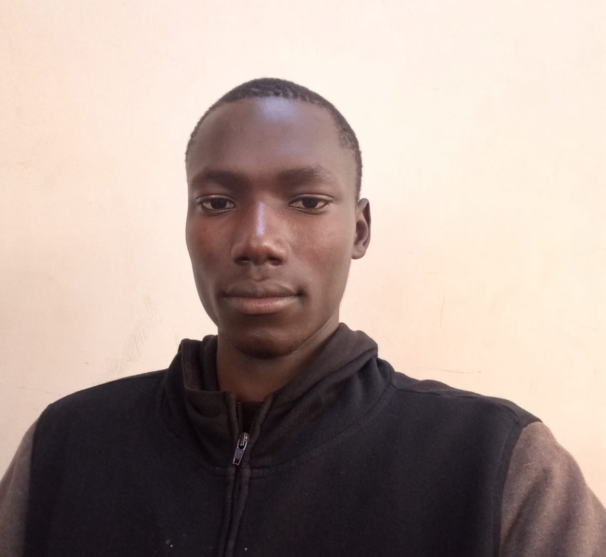

My name is Moses Madiba. I am a student at Kisii University, pursuing a Bachelor of Science in Information Technology.
I come from Busia, Kenya. I have a strong interest in information technology, computers, cybersecurity, web development and modern computing technologies.
I enjoy exploring new technologies, solving problems and learning new programming techniques that can help me develop my technical and professional skills.
Name: Moses Madiba
Phone Number: +254 741562332
Email Address: mosesmadiba32@gmail.com
City/Town: Busia, Kenya
Kisii University
Currently pursuing a Bachelor of Science in
Information Technology.
Butula Boys High School
Completed secondary education and obtained the
Kenya Certificate of Secondary Education (KCSE).
Hekima Academy School
Completed primary education and obtained the
Kenya Certificate of Primary Education (KCPE).
Early Childhood Development Education
Completed my early childhood education.
After completing my university course, I hope to build a successful career in web development and other areas related to computing.
I also aspire to advance my knowledge in cybersecurity, software development and emerging technologies. My goal is to use technology to develop innovative solutions to real-world problems.